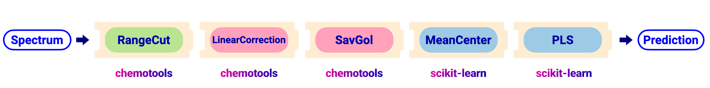

Optimize the model#
When building a chemometric model, analysts need to make several choices about hyperparameters that can significantly affect the model’s performance. Hyperparameters are those parameters that are set before training the model. Some common hyperparameters are:
How many components should the model use?
What’s the best filter length for a Savitzky-Golay filter?
Which polynomial order works best?
To answer these, different hyperparameter combinations are tested and evaluated, typically using cross-validation, to find the ones that yield the best performant model.
In this section, we’ll investigate different options to optimize these choices using chemotools and Scikit-Learn’s model optimization options
such as GridSearchCV or RandomSearchCV, which will help searching the
hyperparameter space systematically and selecting the best hyper parameters.
Two excellent advanced resources for hyperparameter optimization are shown below by the fellows at Probabl..
|
|


Hyperparameter optimization#
As an example, we will optimize the hyperparameters in the pipeline depicted in the image below.
{kind=link}
The pipeline can be created using the code shown below:
from chemotools.feature_selection import RangeCut
from chemotools.baseline import LinearCorrection
from chemotools.derivative import SavitzkyGolay
from sklearn.cross_decomposition import PLSRegression
from sklearn.pipeline import make_pipeline
from sklearn.preprocessing import StandardScaler
# Define the pipeline
pipeline = make_pipeline(
RangeCut(start=950, end=1550, wavenumbers=wavenumbers),
LinearCorrection(),
SavitzkyGolay(window_size=21, polynomial_order=2, derivate_order=1),
StandardScaler(with_mean=True, with_std=False),
PLSRegression(n_components=2, scale=False)
)
- All hyperparameter optmization methods, following the three follwoing steps:
They all explore the hyperparameter space to find an optimal set of hyperparameters.
They all use cross-validation to evaluate the performance of each set of hyperparameters.
Note
The main difference between these methods is how they explore the hyperparameter space.
For example, GridSearchCV explores the hyperparameter space systematically, while RandomSearchCV samples a
fixed number of random combinations from the hyperparameter space.
The first step is to define the hyperparameter space. In our case we would like to evaluate the following hyperparameters: - The number of components in the PLS regression model (n_components) - The window size of the Savitzky-Golay filter (window_size) - The polynomial order of the Savitzky-Golay filter (polynomial_order) - The derivative order of the Savitzky-Golay filter (derivate_order)
To define the hyperparameter space, we can define the hyper parameter grid as a dictionary, where the keys are the names of the hyperparameters and the values are lists of possible values for each hyperparameter. The code to define the hyperparameter space is shown below:
# Define the hyperparameter space
param_grid = {
'plsregression__n_components': [1, 2, 3, 4, 5, 6, 7, 8, 9, 10],
'savitzkygolay__window_size': [5, 11, 21],
'savitzkygolay__polynomial_order': [2, 3],
'savitzkygolay__derivate_order': [0, 1]
}
Next step is to define the positions of the samples in the hyperparameter space. We will investigate different strategies.
GridSearchCV#
GridSearchCV is a method that performs an exhaustive search over a specified parameter grid.
It evaluates all possible combinations of hyperparameters in the grid and selects the one that yields the best performance based on cross-validation.
This method is useful when the hyperparameter space is small and well-defined. A visual representation of the GridSearchCV process is shown below:
{kind=link}
The code to perform the GridSearchCV is shown below:
from sklearn.model_selection import GridSearchCV
# Define the GridSearchCV
grid_search = GridSearchCV(
pipeline,
param_grid=param_grid,
scoring='neg_mean_squared_error',
cv=5,
n_jobs=-1
)
# Fit the model
grid_search.fit(spectra, reference)
# Get the best hyperparameters
best_params = grid_search.best_params_
print("Best hyperparameters:", best_params)
# Get the best score
best_score = grid_search.best_score_
print("Best score:", best_score)
# Get the best estimator
best_estimator = grid_search.best_estimator_
print("Best estimator:", best_estimator)
- There are a few important parameters to note in the
GridSearchCVfunction: scoringspecifies the metric used to evaluate the performance of the model. In this case, we are using the negative mean squared error (MSE) as the scoring metric.cvspecifies the number of cross-validation folds to use. In this case, we are using 5-fold cross-validation.n_jobsspecifies the number of jobs to run in parallel. In this case, we are using all available cores by settingn_jobs=-1.
Note
🚀 Laveraging the multiple cores will speed up the process of hyperparameter optimization, especially when the dataset is large. You can further speed the process by caching the intermediate results using the memory parameter in the pipeline,
as shown in the video above!
RandomizedSearchCV#
RandomizedSearchCV is a method that samples a fixed number of random combinations from the hyperparameter space and evaluates their performance using cross-validation.
This method is useful when the hyperparameter space is large and well-defined. A visual representation of the RandomizedSearchCV process is shown below:
{kind=link}
The code to perform the RandomizedSearchCV is shown below:
from sklearn.model_selection import RandomizedSearchCV
# Define the RandomizedSearchCV
random_search = RandomizedSearchCV(
pipeline,
param_distributions=param_grid,
n_iter=10,
scoring='neg_mean_squared_error',
cv=5,
n_jobs=-1
)
# Fit the model
random_search.fit(spectra, reference)
# Get the best hyperparameters
best_params = random_search.best_params_
print("Best hyperparameters:", best_params)
# Get the best score
best_score = random_search.best_score_
print("Best score:", best_score)
# Get the best estimator
best_estimator = random_search.best_estimator_
print("Best estimator:", best_estimator)
The n_iter parameter specifies the number of random combinations to sample from the hyperparameter space. In this case, we are sampling 10 random combinations.
The param_distributions parameter specifies the hyperparameter space to sample from. In this case, we are using the same hyperparameter space as in the GridSearchCV example.
The scoring, cv, and n_jobs parameters are the same as in the GridSearchCV example.
Note
As explained in the video above, RandomizedSearchCV allows exploring more datapoints in the hyperparameter space, which can lead to better results than GridSearchCV, especially when the hyperparameter space is large.